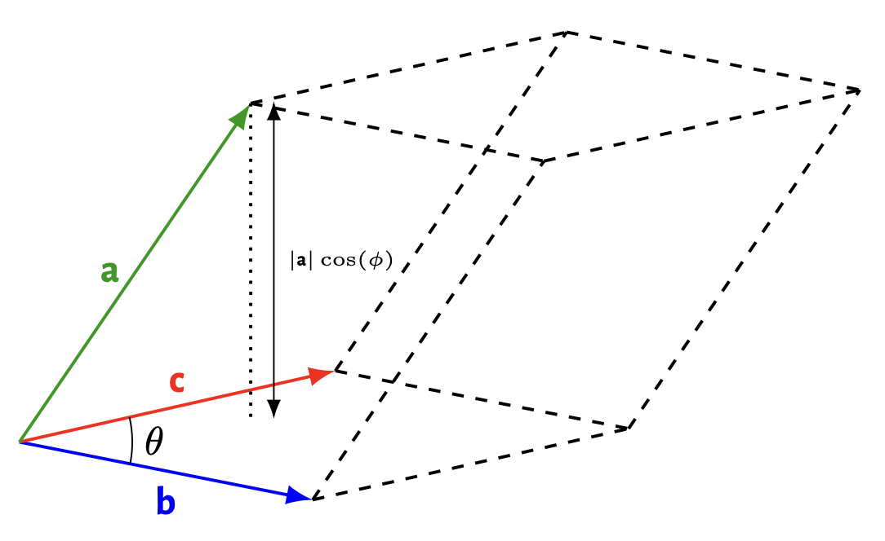

On this page, notes for the Cambridge Natural Sciences Tripos will slowly appear...
 Lucy Cavendish Bridging Week
Lucy Cavendish Bridging Week
As part of the Lucy Cavendish Bridging Week, I ask students to complete a preparatory examples sheet on exponential functions, given below.
❧ Preparatory mathematics examples sheet
To do one of the starred (difficult and optional) questions, it will be useful to look up the Gaussian integral, described here.
Part IA Mathematics for Natural Sciences
Course theme music: 12345, by Em Beihold
In 2024-2025, I supervised the Part IA Mathematics for Natural Sciences course, and will be doing so again in 2025-2026. For my Lucy Cavendish students, I have my own problem sheets which are given below.
Here is a useful document detailing some frequently asked questions about first-year maths; I would advise you to read it before our first supervision.
Mathematics A and B
0. Basic skills
Mathematics A
1. Basics of vector geometry, and the scalar product
2. The vector product, and triple products of vectors
3. Vector area, polar coordinate systems, and complex numbers
4. More complex numbers, and hyperbolic functions
5. Differential calculus, Riemann sums, and basic integrals
6. Methods of integration
7. Taylor series, and Newton-Raphson iteration
8. Probability spaces, conditional probability, and combinatorics
9. Discrete and continuous random variables, and functions of random variables
❧ Michaelmas revision sheet
10. First-order ordinary differential equations
11. Linear ordinary differential equations
12. Partial differentiation, and the chain rule for multivariable functions
13. Exact differentials, algebra of differentials, and applications in thermodynamics
14. Contour sketching
15. Multivariable integration and Gaussian integrals
16. Scalar and vector fields, and line integrals
17. Surface integrals and the integral theorems
❧ Lent revision sheet
18. Matrix algebra I
19. Matrix algebra II
20. Fourier series
Mathematics B
1. Basics of vector geometry, and the scalar and vector products
2. Further vector geometry, triple products, vector area, and polar coordinate systems
3. Complex numbers and hyperbolic functions
4. Differential calculus, limits and continuity
5. Infinite series and Taylor series
6. Single-variable integration
7. Multivariable integration and Gaussian integrals
8. Probability spaces, conditional probability, and combinatorics
9. Discrete and continuous random variables, and functions of random variables
❧ Michaelmas revision sheet
10. First-order ordinary differential equations
11. Linear ordinary differential equations
12. Partial differentiation, differentials, and the single-variable chain rule with multivariable functions
13. The multivariable chain rule, exact differentials, and applications in thermodynamics
14. Contour sketching and conditional optimisation
15. Scalar and vector fields, and line integrals
16. Surface integrals and the integral theorems
17. Fourier series
❧ Lent revision sheet
18. Matrix algebra I
19. Matrix algebra II
20. Partial differential equations